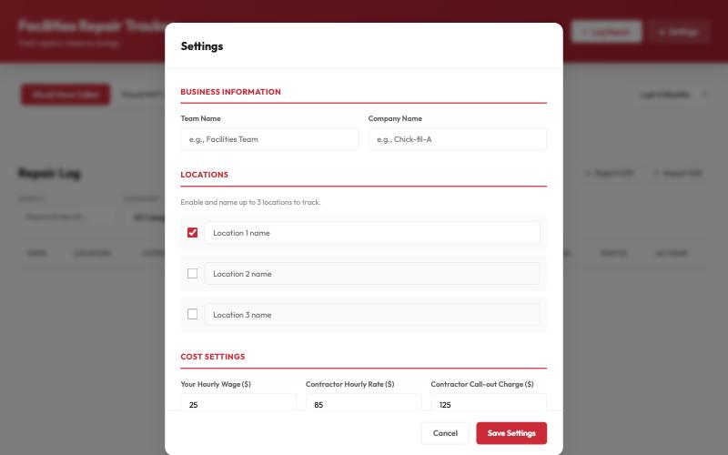
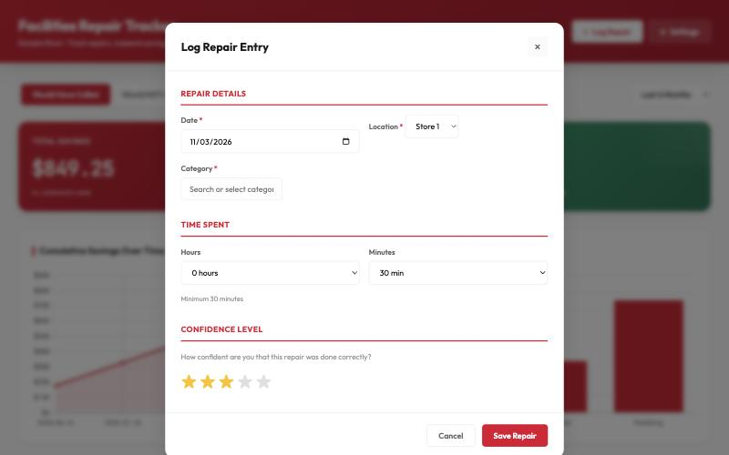
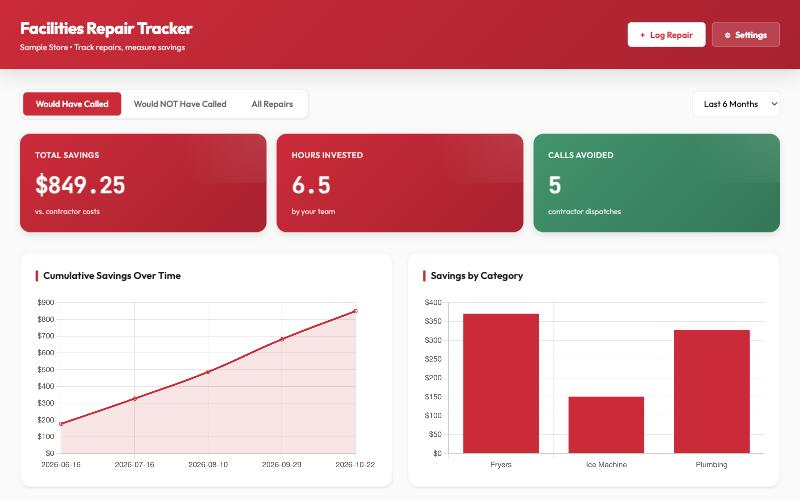

Facilities Repair Tracker — Setup Guide
Log every repair your team handles in-house next to what a contractor would have charged, so the savings add up where everyone can see them. It's one web page. There's nothing to install and no Google setup. Plan on about 5 minutes, on a computer or tablet.
Before you start
- A computer or tablet with Chrome, Edge or Safari, connected to the internet. Use the same device each time (see "Where your data is kept").
- Up to 3 location names, e.g. your store and a second store
- The hourly wage of whoever does the repairs
- A typical contractor's hourly rate and call-out charge
- Optional: your equipment categories, e.g. Fryers, Ice Machine, Plumbing. You can also add them as you go.
Step 1: Open the tool
Click Open the Facilities Repair Tracker. Bookmark the page so you can come back to it.
Want a copy that lives on your computer instead? Right-click the same link, choose Save Link As…, and open the saved file whenever you need it.
Step 2: Fill in Settings (first time only)
The Settings window opens by itself the first time. It won't close until it's saved.
- Enter a Team Name and Company Name. They show in the page header.
- Name Location 1. Tick and name Locations 2 and 3 if you track more than one store.
- Enter Your Hourly Wage, Contractor Hourly Rate and Contractor Call-out Charge.
- Add Equipment Categories with + Add Category (optional).
- Click Save Settings.

You can change any of this later with the ⚙ Settings button.
Step 3: Log a repair
- Click + Log Repair.
- Pick the date and location.
- Pick a Category, or type a new one and choose + Add. Then do the same for the Item.
- Set the time spent. The minimum is 30 minutes.
- Set your confidence in the fix, 1–5 stars.
- Leave I would have called a contractor ticked if you would have. If not, untick it and say why (at least 80 characters).
- Describe the problem and the fix (at least 120 characters).
- Click Save Repair.

Step 4: Back up regularly
Click ↓ Export CSV in the Repair Log once a month and keep the file somewhere safe. ↑ Import CSV brings a backup in on another computer. Import adds to what's there; it doesn't replace it, so import a file only once.
How savings are worked out
- Contractor cost = call-out charge + (contractor hourly rate × your time × 0.7). The 0.7 assumes a contractor finishes about 30% faster than your team.
- Your cost = your hourly wage × your time.
- Savings = contractor cost − your cost. Only repairs marked "would have called" count toward Total Savings.
Where your data is kept
- Nothing is uploaded anywhere. Your settings and repairs are saved in this browser on this computer only.
- A different computer, a different browser or a private window starts empty. So does clearing your browser data.
- The online link and a saved copy on your computer keep separate logs.
- To share the log between two people, use Export CSV on one device and Import CSV on the other.
How to know it worked
- The header shows your team name, and the dashboard cards show Total Savings, Hours Invested and Calls Avoided.
- Your repair appears in the Repair Log table at the bottom.
- Close the tab and open it again. Your repairs are still there.

If something goes wrong
- Save Repair won't save. A message tells you what's missing: a category, an item, or a description under 120 characters. The counter under each box turns green when it's long enough.
- My repairs disappeared. You're probably on a different computer or browser, in a private window, or the browser data was cleared. Open the tool where you logged them, or use ↑ Import CSV with your last export.
- "Warning: Unable to save data." The browser is in private mode or blocks storage. Open the tool in a normal window.